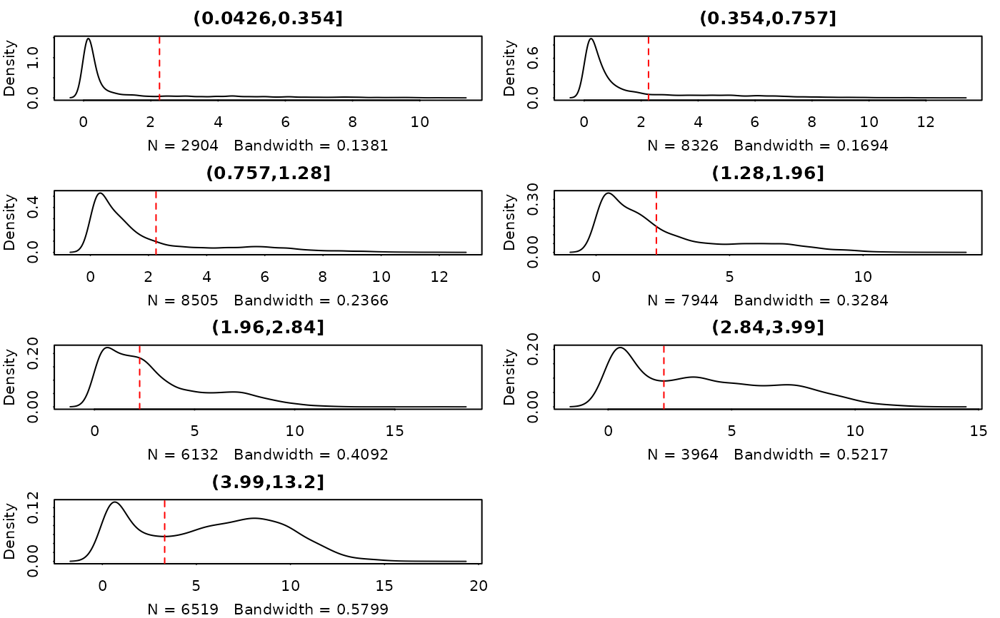

R/thresholdSCRNA.R
plot.thresholdSCRNACountMatrix.RdPlot cutpoints and densities for thresholding
# S3 method for thresholdSCRNACountMatrix
plot(x, ask = FALSE, wait.time = 0, type = "bin", indices = NULL, ...)output of thresholdSCRNACountMatrix
if TRUE then will prompt before displaying each plot
pause (in seconds) between each plot
one or more of the following: 'bin' (plot the genes by the binning used for thresholding), or 'gene' (plot thresholding by gene -- see next argument)
if type is equal to 'gene', and is a integer of length 1, then a random sample of indices genes is taken. If it is NULL, then 10 genes are sampled. If it is a integer vector of length > 1, then it is interpreted as giving a list of indices of genes to be displayed.
further arguments passed to plot
displays plots
## See thresholdSCRNACountMatrix
example(thresholdSCRNACountMatrix)
#>
#> tSCRNA> data(maits,package='MAST', envir = environment())
#>
#> tSCRNA> sca <- FromMatrix(t(maits$expressionmat[,1:1000]), maits$cdat, maits$fdat[1:1000,])
#> Assuming data assay in position 1, with name et is log-transformed.
#>
#> tSCRNA> tt <- thresholdSCRNACountMatrix(assay(sca))
#> (0.0426,0.354] (0.354,0.757] (0.757,1.28] (1.28,1.96] (1.96,2.84]
#> 2.258200 2.258200 2.258200 2.258200 2.258200
#> (2.84,3.99] (3.99,13.2]
#> 2.258200 3.313588
#>
#> tSCRNA> tt <- thresholdSCRNACountMatrix(2^assay(sca)-1, data_log=FALSE)
#> (0.0426,0.354] (0.354,0.757] (0.757,1.28] (1.28,1.96] (1.96,2.84]
#> 2.258200 2.258200 2.258200 2.258200 2.258200
#> (2.84,3.99] (3.99,13.2]
#> 2.258200 3.313588
#>
#> tSCRNA> opar <- par(no.readonly = TRUE)
#>
#> tSCRNA> on.exit(par(opar))
#>
#> tSCRNA> par(mfrow=c(4,2))
#>
#> tSCRNA> plot(tt)
